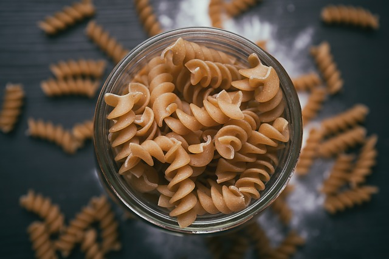

El Arte de Comer Saludable
Mente Sana en Cuerpo Sano
Pasta Integral
15 de Febrero de 2019 La pasta integral posee un índice glucémico menor que la pasta blanca, por ello se convierten en un excelente aliado para controlar la Diabetes y otorga los siguientes beneficios:
- Mejora la digestión:
- La fibra que contiene en las cascarillas de trigo pone a trabajar a nuestros intestinos, previniendo así el estreñimiento.
- Incrementa la sensación de saciedad:
- La fibra que contiene las pastas integrales, no aumenta calorías, pero si incrementa el volumen del alimento, haciendo que el estómago rápidamente se sienta satisfecho.
- Ayuda a manejar la Diabetes:
- Para las personas que viven con Diabetes, las pastas integrales son ideales porque están compuestas de carbohidratos de lenta absorción, lo que hace que la glucosa en sangre aumente de forma paulatina.
- Beneficia la circulación:
- Gracias a que estas pastas contienen selenio, la circulación y el corazón se ven favorecidos con su consumo.
Si va a comer en restaurantes escoja uno que esté limpio y que el aspecto de los trabajadores sea el adecuado.
También se debe comer fibras diariamente e ingerir frutas, hortalizas y granos en todas las porciones de comidas.
La ingesta de azúcar debe limitarse a menos de 40g/día (10 cucharaditas rasas), la de sal a 5g/día.
El Aceite de Oliva
20 de Noviembre de 2018
El aceite de oliva es un aceite vegetal de uso principalmente culinario. Se obtiene del fruto del olivo, denominado oliva o aceituna. Casi la tercera parte de la pulpa de la aceituna es aceite. Por esta razón, desde la Antigüedad se ha extraído fácilmente con una simple presión ejercida por un molino.
Histórica y culturalmente ha sido un producto muy ligado al área del Mediterráneo. Hoy tan solo un 3% de la producción mundial se realiza fuera del área mediterránea. España produce casi la mitad del aceite de oliva de todo el mundo, seguida por Italia y Grecia. Estos tres países acaparan las tres cuartas partes de la producción mundial.
Si va a comer en restaurantes escoja uno que esté limpio y que el aspecto de los trabajadores sea el adecuado.
También se debe comer fibras diariamente e ingerir frutas, hortalizas y granos en todas las porciones de comidas.
La ingesta de azúcar debe limitarse a menos de 40g/día (10 cucharaditas rasas), la de sal a 5g/día.